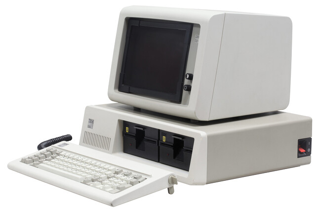
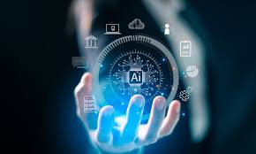

La historia de la computación inicia con dispositivos mecánicos como el ábaco,
seguido por las primeras calculadoras de Pascal y Leibniz. En el siglo XX surgieron
máquinas como el ENIAC y la Zuse Z3, que dieron paso a la era de los computadores electrónicos.
A lo largo de las décadas, la computación ha pasado por varias generaciones:
válvulas de vacío, transistores, circuitos integrados
y la actual computación en la nube, que permite acceso remoto a servicios y datos.

Inteligencia Artificial
La Inteligencia Artificial (IA) es una rama de la informática que busca que las máquinas
realicen tareas que normalmente requieren inteligencia humana, como el reconocimiento de imágenes,
el procesamiento del lenguaje natural y la toma de decisiones.
Hoy en día, la IA se aplica en asistentes virtuales, sistemas de recomendación,
diagnósticos médicos y automóviles autónomos. Su desarrollo plantea avances, pero también retos éticos.

Ciberseguridad
La ciberseguridad es el conjunto de prácticas y tecnologías que buscan proteger los sistemas informáticos,
redes y datos frente a accesos no autorizados, ataques y daños.
Algunas medidas esenciales incluyen: el uso de contraseñas seguras,
software actualizado y copias de seguridad.
Además, la formación de los usuarios es clave para evitar ataques de ingeniería social.